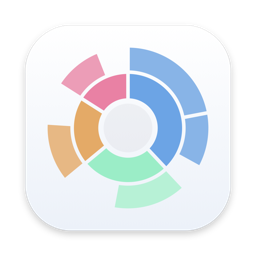
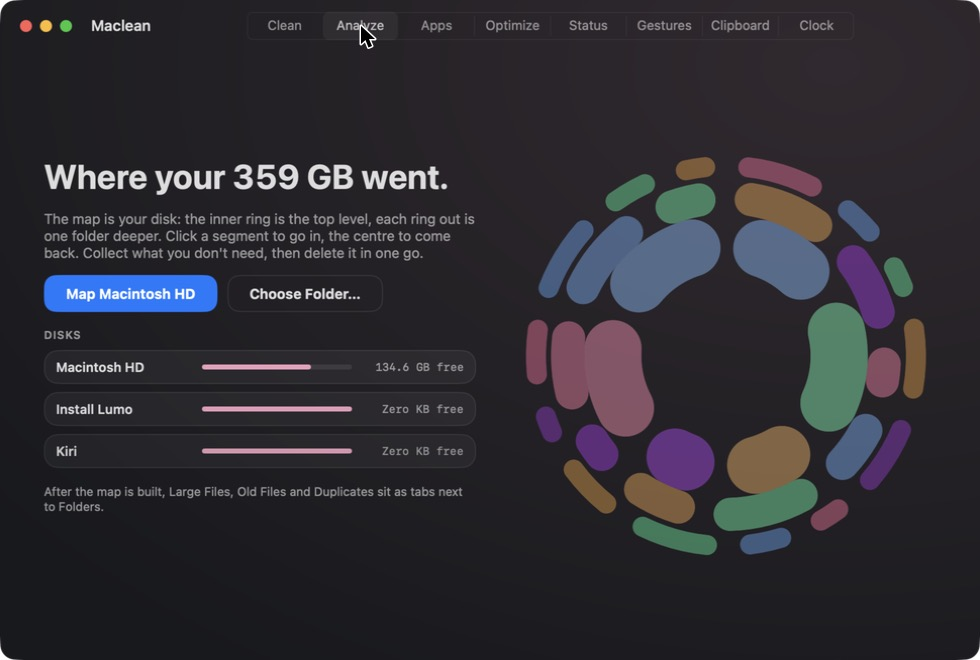
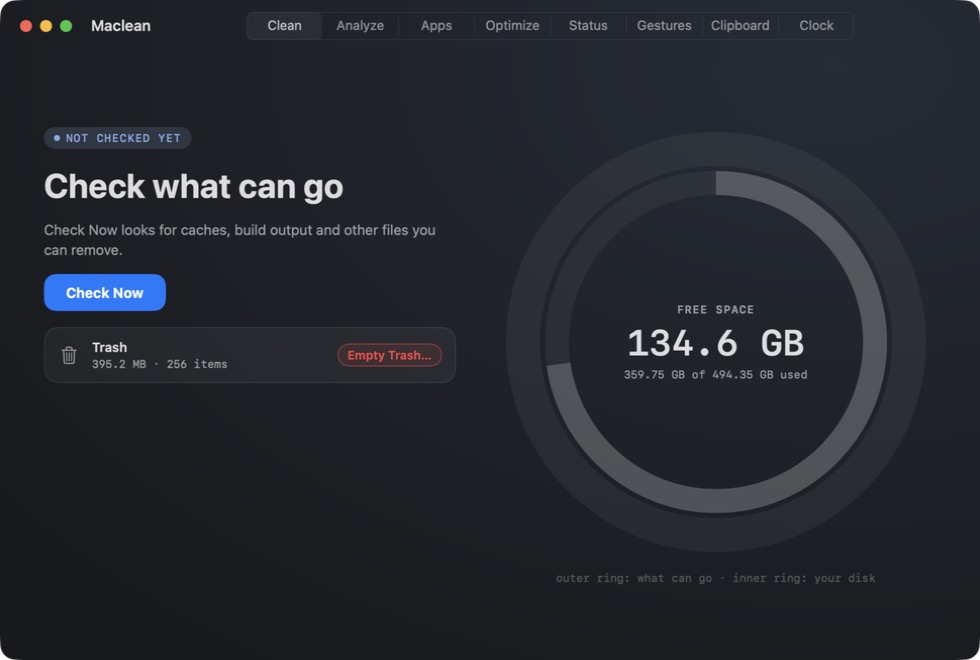
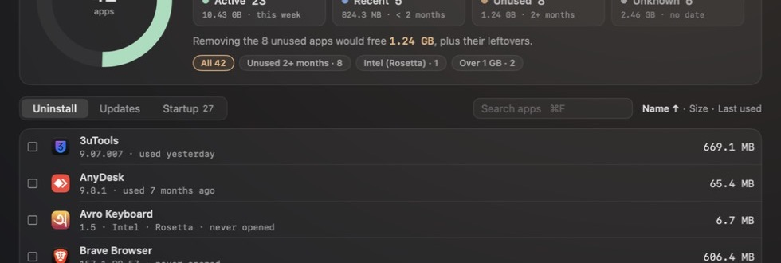
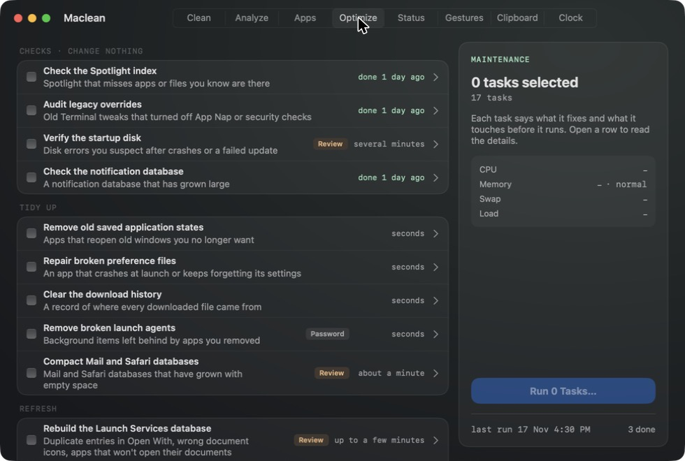
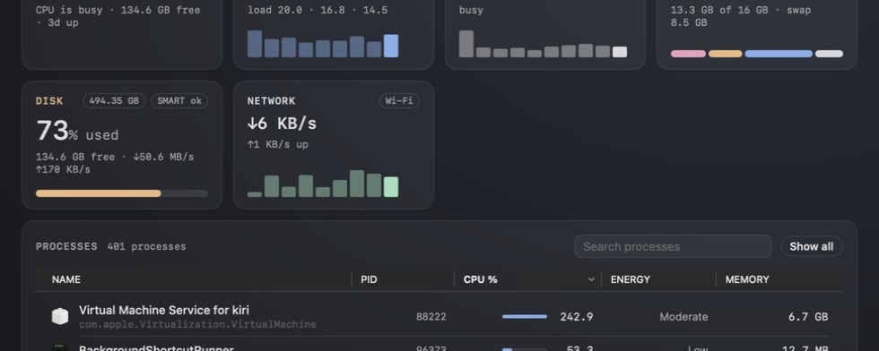
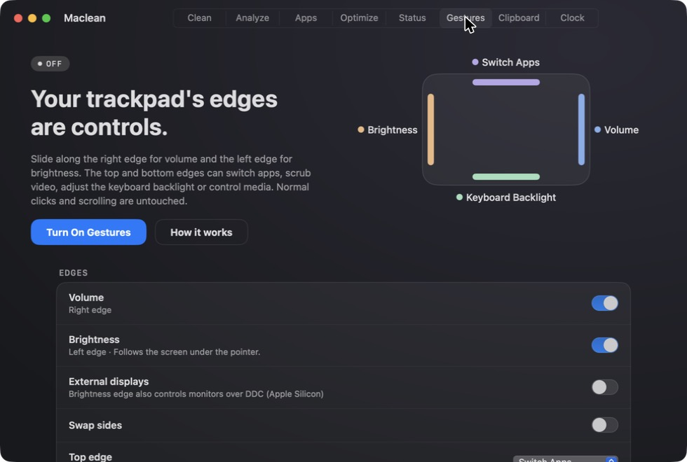
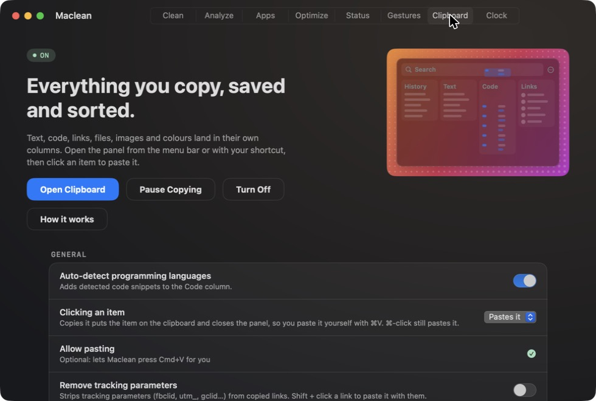
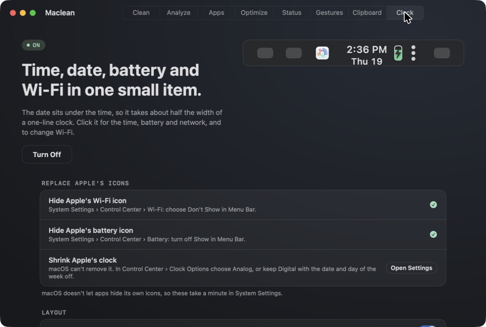

Safe by design
Deleting is slow on purpose: collect first, a 5-second countdown, a re-check right before removal, and Undo for cleans. System folders, keychains, Mail, Messages and Photos can't be deleted.

MacleanFree · Native Swift · No telemetry
Clean and analyze your disk, uninstall apps, watch your system, add trackpad gestures, keep a clipboard history and replace the menu bar clock. One small app, eight tools.
macOS 14 or later · Apple silicon and Intel

Takes the place of
Clean, Analyze, Apps, Optimize and Status are ready when you open it. Gestures, Clipboard and Clock are off until you turn them on, and cost nothing while off.
Cleaning
Check Now looks for caches, logs, build output, installers and leftovers of removed apps. Review the list, tick what you want gone, and it moves to the Trash with Undo.
Open it with ⌘1

Cleaning
Scan a whole disk or any folder and explore it on an interactive map. Click a segment to go in, the centre to come back out.
Open it with ⌘2
Cleaning
See every app with its size and when you last used it. Tick some and review every cache, preference and support file before anything is removed.
Open it with ⌘3

Maintenance
Seventeen tasks such as flushing DNS, rebuilding the Quick Look and icon caches, or compacting Mail and Safari databases. Every row says what it fixes and what it touches.
Open it with ⌘4

Monitoring
CPU, GPU, memory, disk, network, battery and fans, with a health score and a process table you can sort, search and quit.
Open it with ⌘5

Replaces a utility Off until you turn it on
Slide along the right edge for volume and the left for brightness. The top and bottom edges can switch apps, scrub video, adjust the keyboard backlight or control media.
Open it with ⌘6

Replaces a utility Off until you turn it on
Text, code, links, files, images and colours land in their own columns. Open the panel from the menu bar or with your shortcut, then click an item to paste it.
Open it with ⌘7

Replaces a utility Off until you turn it on
A stacked clock for the menu bar: the date sits under the time, so it takes half the width. Click it for one popover that replaces Apple's three.
Open it with ⌘8

Deleting is slow on purpose: collect first, a 5-second countdown, a re-check right before removal, and Undo for cleans. System folders, keychains, Mail, Messages and Photos can't be deleted.
No analytics, no accounts, no tracking. Clipboard filters keep passwords and keys out. Network checks like update lookups and speed tests only run when you ask or on a daily update check.
Written in Swift and SwiftUI. The optional tools do no work at all while off. Signed updates install themselves.
Stop juggling a cleaner, an uninstaller, a monitor, a gestures utility, a clipboard manager and a menu bar clock. They share one look, one set of shortcuts and one update.
Needs macOS 14 Sonoma or later, on Apple silicon or Intel.
brew tap smalhasib/macleanbrew trust smalhasib/macleanbrew install --cask macleanRun all three, in this order. brew install alone can’t find Maclean until the tap is added and trusted. Update later with brew upgrade --cask maclean. The cask also installs the maclean-scan command.
.dmg and open it.Maclean isn't notarized by Apple, so macOS may block the first launch. Allow it once:
xattr -dr com.apple.quarantine /Applications/Maclean.appOnce it opens, Maclean installs updates itself.
Maclean asks until it's on. Without it, macOS hides folders like Mail and Messages and totals come out low. Folders only an administrator can open ask for your password once per scan.
Press Check Now in Clean, or map a disk in Analyze. Nothing is deleted until you review and confirm.
Open Gestures, Clipboard or Clock and choose Turn On. Choose what appears in the menu bar in Settings › General.